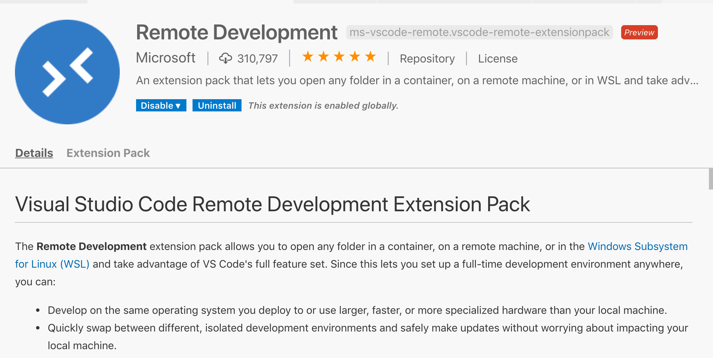
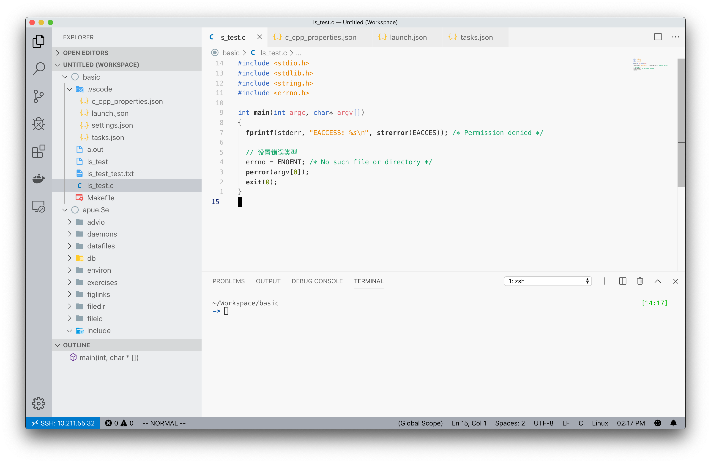
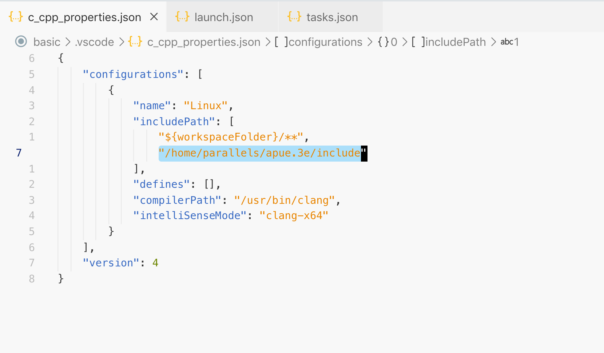
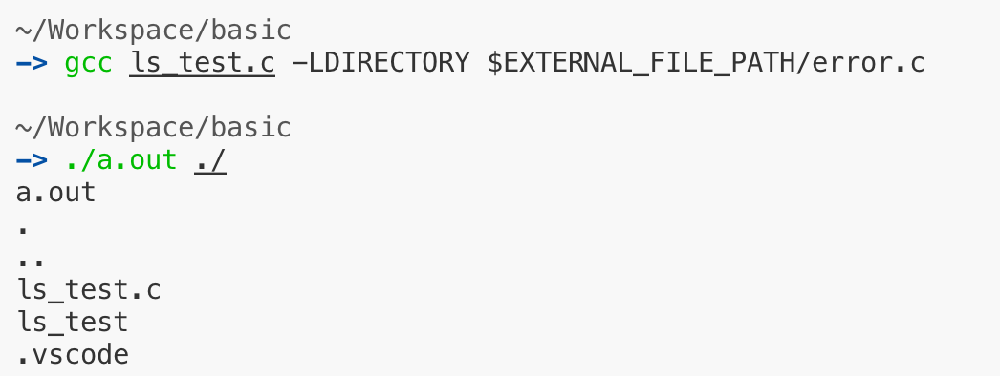
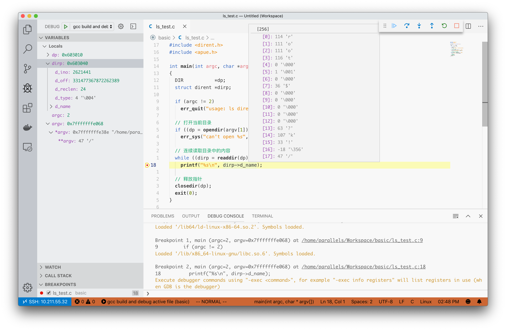

在开始《UNIX 环境高级编程（第三版）》学习前，需要搭建一个舒适的学习环境，保证自己可以愉快地动手敲一敲其中的代码。
开发环境和代码编辑器
运行在虚拟机中的Ubuntu里的代码编辑器用起来感觉不是怎么顺手，万幸的是VSCode推出了远程编辑的功能，也就是Remote Development。自己按照教程简单地配置好就可以使用本地的VSCode编辑虚拟机里操作系统中的工程了，而且还支持插件。

为了可以流畅地编写C代码，需要安装一下相应的插件C/C++。
这样，就可以愉快地使用本地的代码编辑器了，把虚拟机界面最小化就行了。注意下图，VSCode集成终端也默认通过ssh远程登录了，所以想要在虚拟机上操作只需要一个VSCode窗口就够了，体验非常好。

gcc以及第三方库
这本书中使用了作者自己编写的一个工具函数，需要点击这里下载。解压后，头文件在 include/apue.h 中，实现在 lib/ 下，比如 err_quit 的实现在 lib/error.c 中。
这是就需要配一下环境变量
1 | export C_INCLUDE_PATH=/home/parallels/apue.3e/include |
/home/parallels/apue.3e/ 为我存放下载下来的那个文件夹的路径。
配 C_INCLUDE_PATH 是让gcc知道额外的头文件路径。配 EXTERNAL_FILE_PATH 是为了简化后期执行gcc命令中的配置。
配好这个之后，需要对VSCode的 C/C++ 插件进行一些配置，将header文件的路径加入其中，如下，见选中的部分

这样，在编写代码时就可以非常好的自动补全体验了。先写一个测试程序，就使用书中的第一个样例程序
1 |
|
完成之后在使用gcc编译时需要添加额外的参数，如下
1 | gcc ls_test.c -LDIRECTORY $EXTERNAL_FILE_PATH/error.c |
$EXTERNAL_FILE_PATH 为之前已经配好的环境变量。这里加入这个的原因是因为其使用到了 error.c 中的函数
执行如下

调试
VSCode提供了调试功能，但是需要进行相应的配置，无法想CLion一样智能。在 .vscode 中需要有两个文件需要创建和配置。自动创建这两个文件模板的方式网上有教程，这里仅记录需要添加那些内容。
tasks.json 文件中的 args 数组需要添加引入的额外库的路径，其实就是配置gcc的参数。此为编译时的配置
1 | { |
launch.json 为运行（调试）时的配置。这里还是使用前面的程序作为例子，它需要传入一个参数，所以需要在 args 数组中添加相关参数的配置
1 | { |
这样子就可以对程序进行调试了

其他
至于命令行的配置就不说了，zsh + oh-my-zsh + zsh-autosuggestions 绝对可以提升你的终端使用体验。